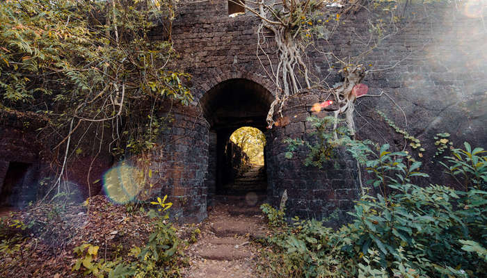

YASHWANT FORT,REDI

Situated near Maharashtra-Goa border, Yashwantgadh fort mainly ruins now. Also known as Redi fort, it was built by the Marathas in the 16th century. The fort was captured by the British in 1765, who later sold the land to locals in 1890 retaining the ownership of the fort walls. If you’re someone who considers ruins beautiful, you must pay a visit to the fort.
Location: Redi, Khalchikar, Maharashtra 416517
Entry Fees: N/A
Famous For: Sightseeing, Trekking, Photography